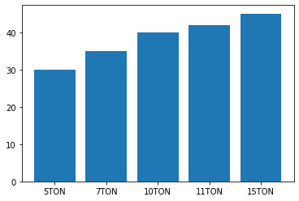
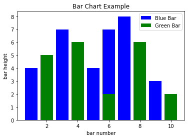
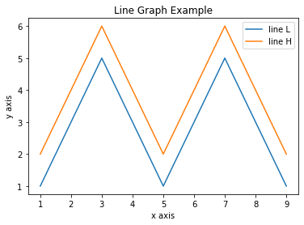
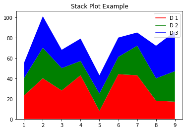

import
막대그래프
# Make a dataset 지게차 톤수별 1회 평균 주유량
oil = [30, 35, 40, 42, 45]
ton = ['5TON', '7TON', '10TON', '11TON', '15TON']
y_pos = np.arange(len(ton))
# 막대그래프 만들기
plt.bar(y_pos, oil)
# 색상 변경 옵션
# plt.bar(y_pos, oil, color='g')
# plt.bar(y_pos, oil, color=['black', 'red', 'green', 'blue', 'cyan'])
# 축이름 바꾸기
plt.xticks(y_pos, ton)
plt.show()
import matplotlib.pyplot as plt
# Look at index 4 and 6, which demonstrate overlapping cases.
x1 = [1, 3, 4, 5, 6, 7, 9]
y1 = [4, 7, 2, 4, 7, 8, 3]
x2 = [2, 4, 6, 8, 10]
y2 = [5, 6, 2, 6, 2]
# Colors: https://matplotlib.org/api/colors_api.html
plt.bar(x1, y1, label="Blue Bar", color='b')
plt.bar(x2, y2, label="Green Bar", color='g')
plt.plot()
plt.xlabel("bar number")
plt.ylabel("bar height")
plt.title("Bar Chart Example")
plt.legend()
plt.show()
선그래프
import matplotlib.pyplot as plt
x = [1, 2, 3, 4, 5, 6, 7, 8, 9]
y1 = [1, 3, 5, 3, 1, 3, 5, 3, 1]
y2 = [2, 4, 6, 4, 2, 4, 6, 4, 2]
plt.plot(x, y1, label="line L")
plt.plot(x, y2, label="line H")
plt.plot()
plt.xlabel("x axis")
plt.ylabel("y axis")
plt.title("Line Graph Example")
plt.legend()
plt.show()
중첩 그래프
import matplotlib.pyplot as plt
idxes = [ 1, 2, 3, 4, 5, 6, 7, 8, 9]
arr1 = [23, 40, 28, 43, 8, 44, 43, 18, 17]
arr2 = [17, 30, 22, 14, 17, 17, 29, 22, 30]
arr3 = [15, 31, 18, 22, 18, 19, 13, 32, 39]
# Adding legend for stack plots is tricky.
plt.plot([], [], color='r', label = 'D 1')
plt.plot([], [], color='g', label = 'D 2')
plt.plot([], [], color='b', label = 'D 3')
plt.stackplot(idxes, arr1, arr2, arr3, colors= ['r', 'g', 'b'])
plt.title('Stack Plot Example')
plt.legend()
plt.show()